Official Ubuntu Book, Kubuntu Chapter
For more information about The Official Ubuntu Book, or to purchase a copy, visit http://www.prenhallprofessional.com/title/0132435942. It is also available at technical book shops everywhere.
Written by Jonathan Jesse and including contributions from Ubuntu community members.
The Kubuntu project strives to take the best of Ubuntu and the best of the K Desktop Environment (KDE) to produce a great Linux distribution. This chapter will cover information ranging from what exactly Kubuntu is to how to manage and keep your Kubuntu system up-to-date with the latest applications and fixes. The goal of Kubuntu is to provide a great Linux operating system (OS) that provides a simple and easy-to-use OS through great graphical tools and an OS that is easy to customize to your desire.
Kubuntu is an official project of Ubuntu—a complete implementation of the Ubuntu OS led by Jonathan Riddell (an employee of Canonical Ltd.) and an army of developers. However, Kubuntu uses KDE instead of GNOME for Ubuntu. The main goal of Kubuntu is to be a great integrated Linux distribution with all of the great features of Ubuntu, but based on KDE. Since Kubuntu is an official part of the Ubuntu community it adheres to the same Ubuntu manifesto: Great software should be available free of charge and should be usable by people in their own language regardless of disability. Also, people should be able to customize and alter their software in ways they deem fit.
Like Ubuntu, Kubuntu makes the following commitments: the very best translations and accessibility infrastructure that the free software community has to offer; Kubuntu will always be free of charge, and there is no extra cost for an “enterprise” version;, and Kubuntu will always provide the latest and best software from the KDE community.
Looking for a certain piece of software? Kubuntu has it, with more then 1,000 pieces of software in its repositories including the latest kernel version and, of course, the latest KDE, which at the time of this writing is at version 3.5.2. The standard desktop applications (Web browsing, e-mail, word processing, and spreadsheet applications) allow Kubuntu to replace any current desktop OS. If you are running servers, whether it is a Web server, e-mail server, or database server, Kubuntu can do that as well.
In 1996, Matthias Ettrich posted a now famous newsgroup post that described some of the problems that he had with the UNIX Desktop.
“UNIX popularity grows thanks to the free variants, mostly Linux. But still a consistent, nice looking, free desktop environment is missing. There are several nice either free or low-priced applications available, so that Linux/X11 would almost fit everybody’s needs if we could offer a real GUI...
IMHO a GUI should offer a complete graphical environment. It should allow a user to do his everyday tasks with it, like starting applications, reading mail, configuring his dekstop... All parts must fit together and work together....
The goal is NOT to create a GUI for the complete UNIX-system or the System-Administrator... The idea is to create a GUI for an ENDUSER.”
With this post he started building the KDE Project. KDE originally stood for Kool Desktop Enviroment but later was adapted to be K Desktop Enviroment. The mascot for KDE is a green dragon named Konqi, who can be found in various applications.
Matthias chose to develop KDE around the QT Toolkit, and by 1997 the first large complex applications were being released. In 1998, version 1.0 was released. However, there was much debate based on the fact that QT was not licensed around a free software license. Two projects came about from this debate, one named “Harmony” which would only use free libraries and another project called GNOME. In 1998, the QT toolkit was licensed under a new Open Source license called the Q Public License (QPL), and in 2000 QT was released under the Gnu General Public License (GPL).
KDE is primarily a volunteer effort. However, many companies employ developers to work on this project. Some of these companies include Novell (through the purchase of SUSE Linux), Trolltech (the company that produces the QT toolkit), and many others.
At the time of this writing the current version of KDE is 3.5.2 . The next major release of KDE will be version 4 and will include many changes. For more information on KDE visit the project’s Web site at www.kde.org. The project’s homepage also provides information on how you can help out with the project and contribute back to the KDE community.
When Ubuntu was first being discussed there were rumors that it would be only based on GNOME, and KDE would be left out. Jonathan Riddell, a KDE developer, posted an article on his Web log (blog) that soon became the No. 1 hit on Google for Ubuntu Linux. The article states:
“The signs are there that this could be something big, more so than the likes of Linspire, Xandros, or Lycrosis. Unlike those companies, they [Canonical Ltd. Software] understand Free Software and open development. It is likely to be a GNOME-based job, but maybe there is a KDE developer out there who is working for them without letting on. If not I’m always available.”
This post started a flurry of activity both for Riddell and the others who wanted to participate.
A lot of changes needed to be made to get Kubuntu working correctly. A hardware-accessible library needed to be changed. Programs and packages needed to be created, along with a clean K-menu changed to fit the philosophy of Ubuntu. And along the way more people needed to join the project. It was a conscious decision to keep the default KDE colors and icons in order to remain as close to KDE as possible.
Once a preview release of Ubuntu (Hoary Hedgehog) came out, another flurry of activity ensued that had developers uploading last minute changes—including some that broke almost everything they had set up—and the first CDs were released. Since this initial release Kubuntu has grown and changed. New items in the Breezy (5.10) release included system settings, automatic mounting when inserting a USB drive, and, of course, the latest KDE. In the next release, Dapper Drake (6.04), there are almost the same numbers of changes the latest version of KDE (version 3.5.2) along with featuring the addition of zerconf discovery, a new installer, Katapult enabled by default, and CJK (Chinese Japanese, and Korean Language) support.
Kubuntu is quickly building up a sizable community of its own. Not only are there new package managers and a dedicated documentation team, but also many community and fan sites to help provide support and the most current information. Kubuntu has grown tremendously from just one developer to a large group as it continues to improve the quality of the distribution.
All of the applications in Kubuntu are stored in the K menu in the left-hand bottom corner of the task bar. This menu is organized in a manner that flows smoothly and makes sense. Items that involve a connection to the Internet are grouped under the Internet section while items that deal with music, videos, or pictures are grouped under Multimedia. Like everything else, this can be customized or changed to fit your needs. This will be discussed later. Any new application installed will find its appropriate spot in the K menu.
Katapult is a great application that is enabled by default that will help you navigate Kubuntu. This handy program will change your computing ways. This is the one program you will miss the most if you ever need to return to the Windows world. Katapult is an application that can launch programs without the need for a shortcut or maneuvering through the K menu. Simply hit Alt-Space, and Katapult will launch. To run an application, simply start typing the name of the program, and Katapult will use tab-completion to fill in the rest of the name. A great feature is that Katapult will also work on files that are stored in the root of your home directory. Figure 7-1 shows Katapult in action.
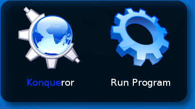Katapult provides an easy way to open just about any application without wasting time searching for its location in the K menu.
The next three icons on the task bar are shortcuts to the System Menu, Konqueror, and Kontact. The system menu allows you to navigate quickly to places such as your home directory, a listing of attached media devices, and even remote places. The Konqueror shortcut launches the default file management tool. We cover this in more detail later in the chapter. Kontact is the default Personal Information Manager (PIM) and will be discussed later on as well. To further emphasize the clean look of Kubuntu, there are no icons on the desktop, as Figure 7-2 shows.
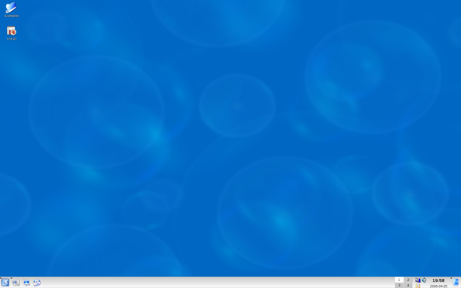The clean look of the Kubuntu desktop
The developers have spent a lot of time making Kubuntu easy to navigate and also very easy to customize.
To shut your computer down, log out, or switch users go to the K menu, and then select the option you would like. Kubuntu is a multiuser (many users per system) OS. You can either lock your session and switch to a new user or just start a new session. The other option is to lock the session so no one else can access your Kubuntu session without the password. The final choice at the bottom of the K menu is to End the Current Session.
Ending a session is the location you would choose to either turn off your computer, reboot, or end the current session (log out). See Figure 7-3 that depicts these options.
Logging out of Kubuntu
Installing Kubuntu is just like installing Ubuntu. It is pretty much a snap. Let’s start with where you find it.
Kubuntu is available at the same location as Ubuntu, www.kubuntu.org/download.php. An image file can be downloaded and then burned onto either a DVD or a CD-ROM. There are two different types of Kubuntu images that can be downloaded and used. The first is the Deskto CD that allows the user to test and run Kubuntu without changing any settings. The second is the actual installer.
New to Kubuntu 6.06, theDesktop CD will come with an installer so you will not have to download a separate version if everything tests successfully. A good way to demonstrate the power of Kubuntu is to show it off with the live CD, and when your friends like it install it for them.
Another way to get Kubuntu would be through ordering the free CD from Ubuntu (shipit.ubuntu.com). The beauty of this is there is no cost for shipping and handling, and you will then have an official CD complete with cover art and everything. This is also great for user groups or install parties were a group of people will be using Kubuntu.
If you have installed Ubuntu on your system already, it is extremely easy to install and configure Kubuntu. In Synaptic, find the package Kubuntu-desktop, which will provide all the necessary programs to have your system look and act like Kubuntu. Don’t worry. You can still switch between Ubuntu with GNOME as the desktop manager and Kubuntu with KDE as the desktop environment. Once Kubuntu is installed, one can choose which desktop environment to use, either GNOME or KDE. Also if you wish to have Ubuntu, it is simple to switch, just install Ubuntu-desktop and you will be using the GNOME desktop.
Once you have installed the Kubuntu-desktop, end your GNOME session and choose Session from the menu. Select KDE instead of GNOME as your window manager, and then select Make Default. From now on KDE will start for you when you sign on.
Kubuntu follows the easy-to-use Ubuntu installer to set up and configure your system. Like Ubuntu, there is more than one way to install a new copy, including Expert and Normal modes. New to this version of Kubuntu is a way to rescue a broken system and get it up and working again. The Normal install, which is the easiest and most used, asks several basic questions such as host name, how the network is configured, username and password, and how the drives will be formatted. Once these questions are answered, the system will proceed with formatting your hard drive and installing Kubuntu. After logging in for the first time the next step will be to make sure your system is up-to-date including any bug fixes or security patches. This is done through Adept, which is discussed later in this chapter.
New to this version of Kubuntu is the ability to install directly off of the Live CD. This removes the need to download sperate CDs, simply download the live cd and show off how great Kubuntu is to your friends or give it a test run for the first time. Kubuntu's Live Installer program is called Ubiquity.
Upon choosing to install Kubuntu, Ubiquity will start guiding you through the installation phase (see figure 7-4.
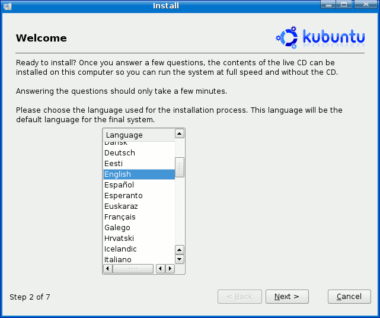Welcome Screen of Ubiquity
Ubiquity will answer basic questions about what language you would like to install (figure 7-5) and then help guide you in setting up the correct country and time zone (figure 7-6)
Choosing your Language
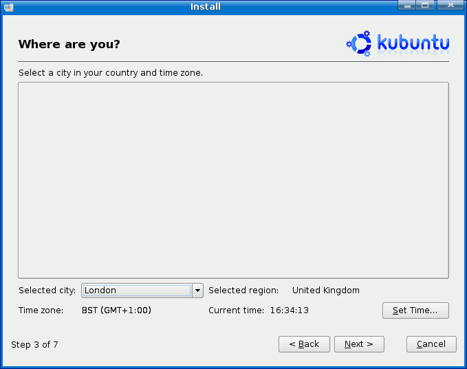Selecting the correct timezone
One these have been, Ubiquity will prompt you to select the correct keyboard layout (figure 7-7) and help you create a user and that password, along with helping you assign a name for the install computer (figure 7-8)
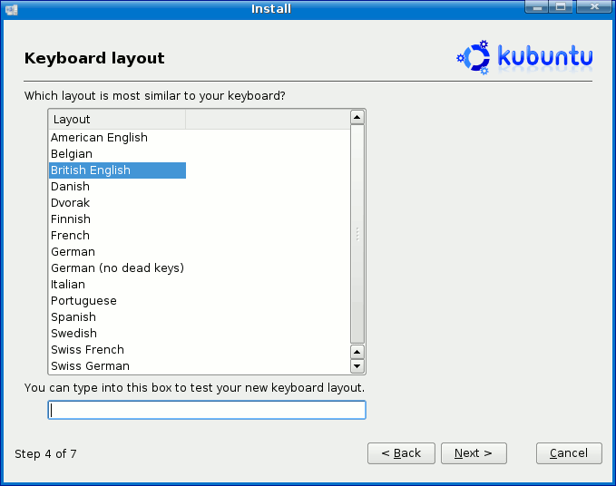Selecting Keyboard Layout
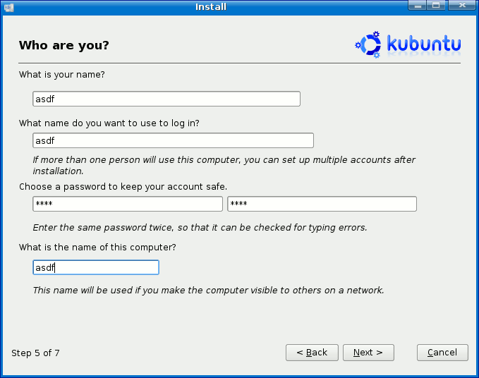Configuring Computer Name and Username
After filling out this information, Ubiquity will help you setup your disks and partition your disks, see figure 7-9. After everything is setup, Kubuntu will be installed and after everything is finished you will be prompted for a reboot (see figure 7-10). You are now ready to use your Kubuntu system.
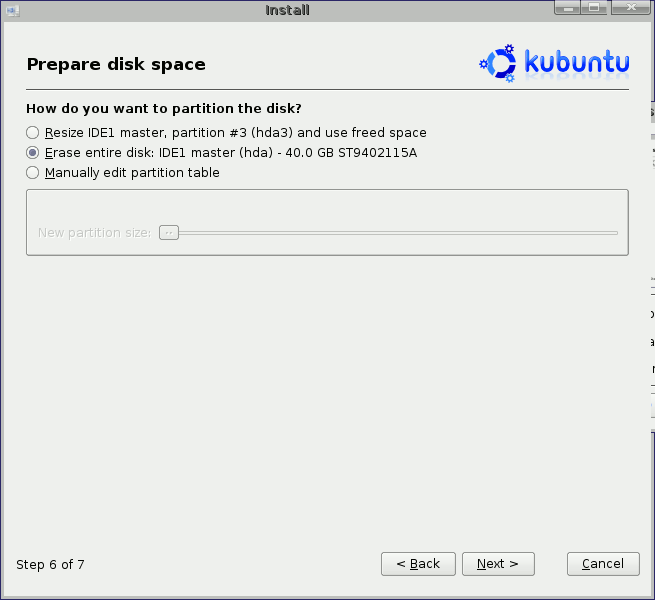Configuring Disk Partitions
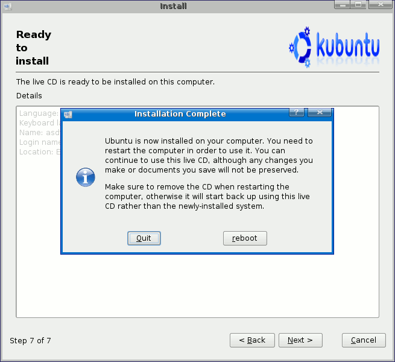Finishing Installing
A large change, and one that many people stumble with before getting used to it, is the “lack” of a root account. Upon installation you are not prompted to provide with a root password. The password created with the first user is the password that will allow you to access the administrative functions. There will be many times when configuring the system or making global changes which will require the sudo password to complete.
A major feature of Kubuntu is the amount of customization that can be done. Due to the freedom of Open Source software, if there is an application you are looking to use, you can find it. Everything from the desktop background to the font size of applications to the order and arrangement of the K menu can be customized.
By simply right-clicking on the desktop and selecting Configure Desktop a great deal of changes can be made. Kdesktop, as the application is called, is divided into five different sections: background, behavior, multiple desktops, screen saver, and display. As you can see from looking at Figure 7-11, the system looks a lot like the program used by Microsoft Windows to adjust the same properties.

Kdesktop
Kubuntu comes with several backgrounds that are installed by default. Any of these may be selected from the list. Additional backgrounds can be selected from KDE.org by clicking on Get New Wallpapers. Since Kubuntu is a multidesktop system, each desktop can have the same background, a different one, or even be sized differently. This system offers many opportunities for great customization.
The behavior section allows the user to customize how the desktop behaves. Want icons on the desktop? Want a menu bar at the top of the screen? How does the mouse behave? Along with these options the user can choose what types of icons are used for each application and association.
Interested in using multiple desktops? How about 20 of them? Any user can organize desktops based on tasks, thus grouping applications together based on the current task one is working. For example, this feature was applied specifically when this book was written. Day-to-day applications were open on one desktop while a word processing application, help applications, and a Web browser were all open on another desktop.
Another important item that can be changed is the screen saver and how it operates. This section, which is under Configure Desktop, allows the user to select any of the preinstalled options or those downloaded from the Internet. After the correct screen saver has been chosen, simply configure it to start automatically and decide if it will lock your screen as well.
The display section can help the user choose different screen sizes and refresh rates. In this section, one can also work with the power settings for your monitor, a great tool for laptop users. Power control allows the monitor to be suspended or powered off after a designated time period passes. These settings can also be applied upon startup if desired.
Choosing how the desktop looks can help make Kubuntu feel personalized. If the appearance seems to be lacking, further changes can be made by choosing System Settings > Appearance. This allows the user to further customize things such as colors, icons and style. Kubuntu is all about customization, and there are many ways to change how the desktop appears. This almost guarantees that no two users will have identical desktops.
Looking for the latest screen saver, desktop background, or other cool things for your Kubuntu installation? Kubuntu fully supports the Get Hot New Stuff (GHNS) framework of KDE. GHNS allows people to upload templates to a server and have other users download and use that template. In an interview posted on KDE.news (http://dot.kde.org/1110652641) Josef Spillner describes exactly how the process works.
“[U]ser A is using a spreadsheet application and modifies a template that comes with it. This template can then be uploaded to a server and eventually be downloaded by user B by checking the contents of the “Get Hot New Stuff” download dialogue.”
The GHNS framework shows up several places throughout Kubuntu.
One place where you can see this is when configuring the background for your desktop. On the right in this section is Get New Wallpapers. Upon selecting this, a new window will open up and display new wallpapers that you can use. These images come from www.kde-look.org.
The GHNS framework at work
Different applications have the capability to download information from the Internet and from KDE sites. Throughout applications in Kubuntu you will find references to “Get More.”
The Kicker is the application launcher of KDE. The Kicker is also capable of running different docked applets such as the page, the task bar, or the clock. Applets are small applications that run inside the Kicker. The applet everyone is probably most familiar with is the task bar. It resides by default at the bottom of the screen and includes the K menu and programs that are currently up and running. The next applet over is also called the mini-pager. It shows a small preview of the different desktops and applications that are running in these desktops. Another applet that will be used on a regular basis is the Quick Launcher Applet. This allows the user to quickly start his or her favorite or most used programs.
Everything that is part of the Kicker can be customized to meet the user’s needs. It may even be removed. To add new items to the Quick Launcher Applet, simply right-click on this applet, and add the application to the panel. Find the program in the list or drag a shortcut from the desktop and access it at any time.
The K menu makes adding, changing, and removing applications very easy to do. Upon installation, each application is placed in a certain location, but this may be altered. Simply right-click on the K menu, and select Menu Editor as shown in Figure 7-13.
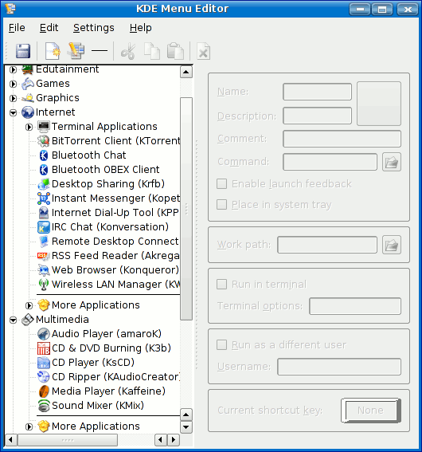Select menu editor
In fact, the user can even change the location of the K menu or remove it altogether.
Upon selecting the menu editor a new window will open up that will allow the user to make the desired changes. One of the most noticeable aspects of this application is that there are more folders in this list than in the K menu. This is due to a decision the team made to only show folders that have programs installed in them. To customize the K menu, simply use the tools provided under the File menu
A major benefit of Kubuntu is that if the user does not like the way the system looks, he or she may change it. Almost everything can be customized to truly personalize the system.
As with any computer application, Kubuntu will occasionally need administrative support. Do not be afraid of personally administrating the Kubuntu system. While it is not completely foolproof, there have been a lot of changes to help make things easier. Knowledge of the command line will go a long way in configuring the system, but the developers have made sure to provide graphical interfaces when they make sense. Everything from changing the IP address from Dynamic Host Control Protocol (DHCP) to static to installing packages can all be done without having to drop down to the command line. This section will focus exclusively on system administration through the graphical interface.
As mentioned earlier, Kubuntu is built around some of the same applications and system as Ubuntu. All applications are installable through packages. Like Ubuntu, Kubuntu uses the Advanced Package Tool (APT) and also like Ubuntu has a wonderful graphical interface that makes it easier to use that is called Adept. Adept is becoming the de facto installer for the KDE environment on Debian-based systems. This program was sponsored by Canonical Ltd. to help further the project of Kubuntu and other Linux distributions. The old package manager, Kynaptic, was lacking many features and was not user-friendly. Adept seeks to solve this problem.
Adept is composed of four parts: the installer (Add/Remove Programs), the main program (Adept), adept update-notifier, and adpet-updater. These programs will help you install packages and keep your system up-to-date with the latest and greatest changes.
To start Adept and begin installing new applications open up the K menu, and click on Add/Remove Programs, or simply type Add/Remove programs in Katapult. Once launched, the following screen (Figure 7-14) will be displayed.
Figure 7-14
Add/Remove Programs main window
Add/Remove programs breaks programs into three groups: packages that can be installed with KDE, applications that can be installed with GNOME, and applications that can be installed on either desktop environment. Searching for that needed application is very simple. Just type in the application you are looking for, click on it, and select install.
Installing an application with Add/Remove Programs
Once you click on Apply Changes, Add/Remove Programs will download the information from the repository and install the application. Easy and painless. Add/Remove programs will also download any dependencies to prevent any conflicts or broken programs.
The main Adept program is slightly more powerful than Add/Remove Programs. Not only can you can install programs and update your system, you can also manage the different repositories from which you can download programs.
To start Adept and begin to install new applications open up the K menu, and move through the System folder to Adept.
Adept
Adept has an easy-to-use search feature that allows the user to quickly locate the application that needs to be installed. Simply locate the name of the application, click the drop down arrow, and select install. This will queue the package to be installed; simply clicking on apply changes will set up the application on the system. Unlike Microsoft Windows, Kubuntu is great about not forcing a system restart in order for the new application to work correctly.
Note
A restart could be required if the version of KDE is updated.
Packages are organized into four different groups or repositories: main, restricted, universe, and multiverse. A standard installation will set up the system to install packages from the main repository. This repository contains applications that are free software, programs that allow for
complete redistribution and which are also fully supported by the Kubuntu team. When the user installs something from the main repository he or she is guaranteed to receive security updates and support through the various venues.
The restricted group of software is reserved for software that is commonly used and is supported by the Kubuntu team, even though they may not be able to change or update it. An example of software included here are binary videos drivers that some vendors publish.
Software in the universe repository is where almost every other known Open Source software application can be found. Software here comes with a variety of licenses, and some might have restricted use in various countries. Users should take care to ensure that they do not violate these restrictions. Items built and maintained in this group are put together by the Masters of the Universe (MOTU). However, there is no support from the core developers for these items.
Anything from the multiverse repository contains software that is not free, which is defined by the Kubuntu Main Component License Policy. Software here is used at the user’s own risk.
With Adept, you do not need to know how to manually edit a sources.list. Adept can guide you through making these changes. From the File menu simply select Manage Repositories.
Editing your repositories in Adept
To enable the universe repository, edit the repository labeled universe, and remove the comments by following these steps.
1 Double-click on the comment next to ##http://us.archive.ubuntu.com/ubuntu, and change the comment field to “deb.”
2. Double-click on the actual address and remove the ## which acts to comment out the repository.
3. Click on Apply at the bottom to save your changes.
Repositories with universe enabled
4. Close this window by clicking Close.
5. Reload your sources by clicking Fetch Updates.
Sometimes there is the need to add repositories to your sources listing, and that is done just as easily as enabling a repository.
1 Open up Manage Repositories from the File Menu.
2. Add the necessary Repository.
3. Click on Apply and then Close to save your changes.
4. Reload your sources for the new repository by clicking on Fetch Updates.
The easiest way to find the package you need to install on your system is to use the search function built into Adept. After opening up Adept and typing in the password, you will be presented with the main Adept screen. Just type the name of the package you are looking for, and Adept will display a listing of every package that includes what you are looking for.
Using the search bar in Adept to find packages
Through the use of filters, Adept will help limit the package listing you are searching for. These filters include: show packages that are not installed, show packages that are installed, and show packages that are upgradeable.
Once the package has been found, click on the name or drop down arrow, and Adept will display the description of the program and current version.
Expanded information regarding a specific package
At this time you will be presented with two options: install the package and view the details of the package. Details will show more information including dependent packages and where the files will be installed.
Once an application is marked for installation, Adept will also mark all of the dependent files for installation as well. This will prevent what is referred to as “dependency hell” in which not all of the required files are installed to get an application to function correctly. Notice that the requested action will change from “no change” to “install.”.
A very important part of installation packages through Adept is to make sure you always preview the changes by clicking on Preview Changes at the top before clicking Apply Changes. Any changes marked can be undone up to the point of applying them simply by clicking Undo.
If you are using the last release of Kubuntu, Kubuntu 5.10 (the Breezy Badger), by simply editing the repositories you can upgrade to the most current version. To change from Breezy Badger to Dapper Drake, change all references to Dapper under Manage Repositories, and save the changes. Make sure you reload the repositories to get all the updates by selecting Fetch Updates. After the information is downloaded select Full Upgrade. That is it. No need to purchase a new OS, no need to worry about how a new version will affect the budget. Simply upgrade to the latest and greatest Kubuntu. Now it is time to grab a cup of coffee, sit back, relax, and watch the system upgrade as it will take a while to download all the changed packages and install them on the system.
Two parts of Adept, the Adept Updater and the Adept-Updater-Notifier, will help keep the system current with the latest fixes and updates. Open up the K menu, and under the System folder launch the System Updater Wizard (Adept Updater). After entering your password, the application will launch and will allow the user to install any needed updates for the system. Like any software package, there are updates. However, Adept updater will help keep you current with the latest and greatest. Just as when installing new packages, the system will rarely have to be restarted for these changes to take effect.
The Adept-Update-Notifier will periodically check for updates and will then allow the user to launch Adept-Updater and install the fixes. The application functions much like the Windows Update icon in Windows systems.
When there are updates available for your system a red triangle will appear in the taskbar. Clicking on it will launch Adept-Updater. After entering your password the necessary updates will be downloaded and the user will be prompted for installation.
The System Settings application (see Figure 7-23) is a new addition to Kubuntu. This program allows users to make many changes to the system, including setting Sound, User Accounts, Mouse Behavior, and other settings on the network. For those familiar with using KDE, System Settings replaces the K Control Center. However, the application is still there and can be run by hitting Alt+F2 for the run command and typing in Kcontrol or by typing Kcontrol in Katapult.
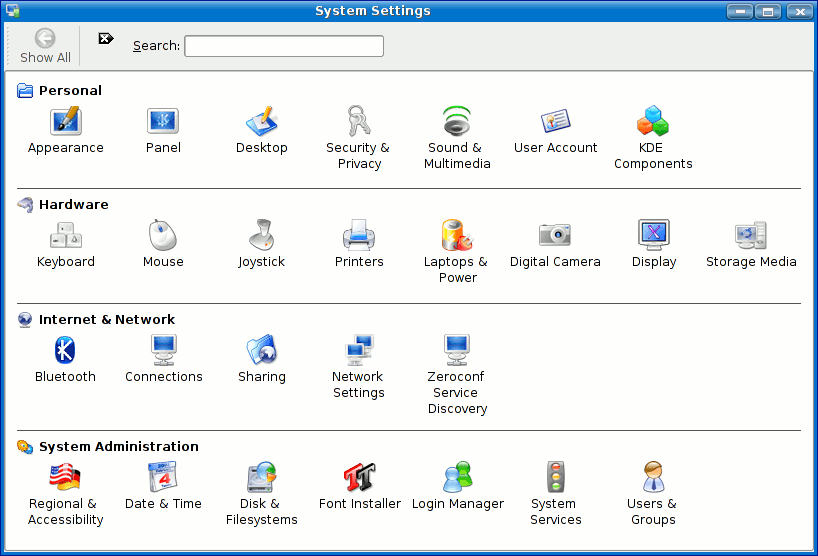The System Settings application
System Settings can be found in the K menu or by typing System Settings in Katapult.
When making changes, there will be times that you will be prompted to enter your password. These changes are system-wide and will affect all users of the Kubuntu system and can be made by entering Administration Mode. System Settings is divided into four sections: personal, hardware, Internet and network, and system administration. When migrating through the different options, to return to the main screen, be sure to select Show All instead of closing out the application. This is a common mistake and may take some getting used to. Selecting this option will return the user to the main System Settings window.
Changes made to this section will only affect the current user signed in. The user can change the fonts, how the panel behaves, and various KDE components.
Under the personal section, you can change the panel, desktop and even user information. Changing the desktop background and settings has already been addressed in this chapter. However, this is another way of accessing this information.
One area in the personal settings where a lot of changes can be made to customize your Kubuntu system, including changing your password, is the user account section. Another area is session management. It can help save your settings upon logging out. You can do a lot of customization to make Kubuntu your very own.
This section explains changing how the mouse functions, how power control is set up, and other hardware-related tasks. It is through this section that the user will learn to set up the type of printer connected to the Kubuntu system. Upon selecting Printers, the Common UNIX Print System (CUPS) will initialize and enable control of the printing subsystem. Figure 7-24 shows the printer window open.
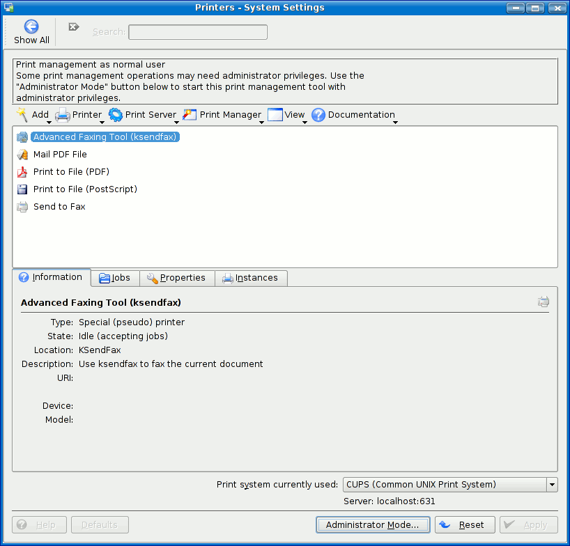The printer window
To add a printer select Add, and follow the guide for configuring the printer. CUPS can print to a locally attached printer, a network attached printer, or ever a printer shared out through a Windows print server. For some of the changes made at this level, the user will need to enter administration mode through use of your password.
New to this version of Kubuntu (6.06) is the capability to change how the graphical system displays. Kubuntu provides an easy-to-use graphical tool (Display) to help manage the X window configuration. Now it is no longer a painful process to change your screen size or resolution, but can be easily done through the system settings window.
In this section of System Settings, the user can make changes that affect how the system operates on a network. For those who use a wireless network, there is a good chance that the network card will be detected during installation. This can be managed here as well.
New to this release of Kubuntu is the capability to run Zeroconf Discovery. Zeroconf allows computers to communicate on a network without any kind of configuration. This utility will discover the different services that are running on any computer that is available on any of the network connections. For example, Zeroconf comes into play when multiple users want to connect two laptops to each other via a cross-over cable to transfer a file or play a network game.
Kubuntu can also be set up to share files and sessions across the network. By selecting Sharing, a new window will open up allowing the user to manage desktop sharing, file sharing, and even local network browsing. If desktop sharing is enabled, others can connect to the first user’s Kubuntu and see what is happening on that desktop. This is a great utility for those trying to support and troubleshoot other computers. File sharing and local network browsing enable the system to act as mini-file server and provide outside access to files on the system.
A lot of information can be modified under the Network section, but be careful. Users can drastically change how the system functions and may accidentally make a change that will prevent Internet access. See Figure 7-25 for an example of how this looks.
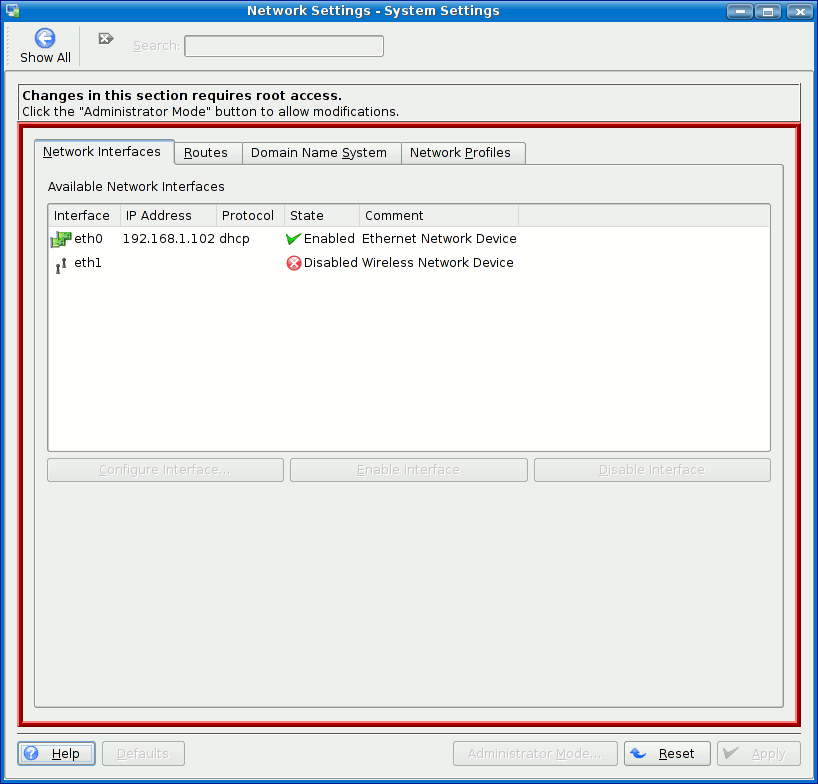The network section
When installing Kubuntu, the installer asked some questions that set up basic networking, including whether or not the IP address would be static or dynamic, the default gateway, and other necessary information. All of these options can be changed here. Any changes made to this section require your user password. In this section the user can make changes to the network interfaces, the routes, how Domain Name System (DNS) is set up, and create additional network profiles (See Figure 7-26). Making all these changes used to require knowledge of the command line, but now it can all be managed within Kubuntu.
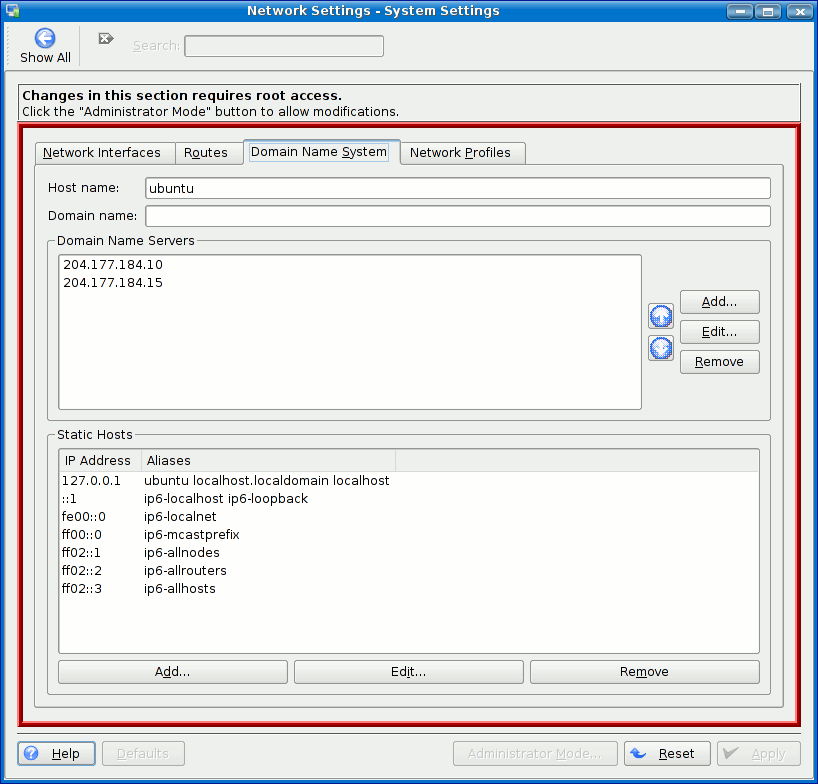Configuring a network interface
The first tab on the network settings window allows configuration of the different interfaces and determining if the addressing will be static or dynamic. Going left to right, the next tab allows changes to the default route and which interface to use. Instead of having to manually edit a host file, under the DNS tab you can set up different static host names and entries. This is all information that you set up during installation, but it can later be changed here.
Setting up and changing how your system works used to require knowledge of text files and the command line, scaring people away from using Linux. With the advent of different graphical tools and the intuitive grouping of programs, system administration has become a lot easier.
The final section of System Settings deals administrating your Kubuntu system. Changes made here will require that you enter your password. Items that can be changed in this section include date and time, users and groups, regional settings, services, and other options.
In the users and groups section you can manage who will be able to access the system and what groups they belong to. If you would like more then one person to be able to access the sudo account, add that individual to the admin group. However, you will need access to the sudo password to make any changes here.
The process of adding and changing users has been simplified to help you out..
Adding users through system settings Is your newly installed Web server not starting automatically? Are you having problems setting up a service to run correctly? System services will guide you through the different run levels and setting up when a service will start. Figure 7-28 shows an example of making such a change.
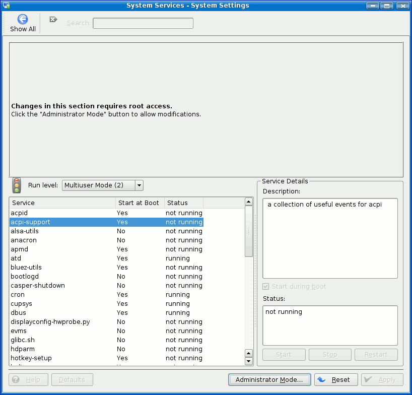Configuring services
Now that you have your system installed and set up the way you would like, it is time to understand how to navigate the different files and ways to access information in Kubuntu. That starts with the default file manager Konqueror.
Konqueror is a very powerful file manager that can do more then just browsing of your directories, it is also the second Web browser to pass the ACID2 test. As a file manager, Konquerer can do everything a “modern” file manager can (See Figure 7-29). Files can be browsed through either an “icon view” or a “tree view.” Copying, pasting, moving, and deleting files are all simple tasks that can be done through Konqueror. A nice feature of Konqueror is that directories automatically update. This means that if a file is created in a directory currently being viewed it is not necessary to refresh the directory to see the changes.
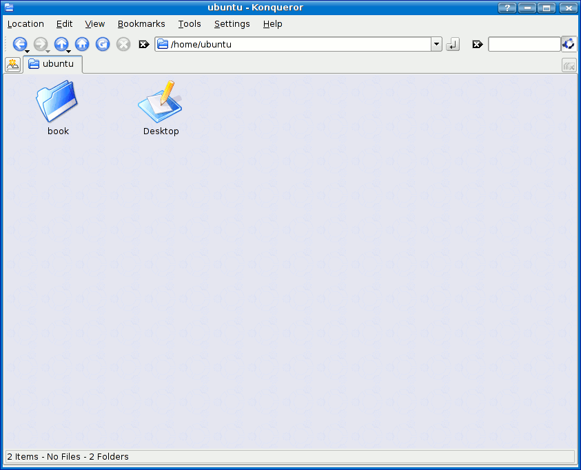Figure 7-29
Konqueror
One of the great things about Konqueror is how much you can do within it. Need access to media files? Simply type media:/ and browse your media files. All other kinds of shortcuts, called kioslave, exist in Konqueror, including searching the Web with Google (gg: KEYWORD), or even browsing files via ssh through sftp://. Need help finding a file on your system? Simply use locate:/ to have Konqueror find it for you. You can visit the different system folders through system:/. There are all kinds of shortcuts and keywords like this built into Konqueror, including Google suggest in the search bar.
Another feature of Kubuntu is a built-in universal viewer. Click on a file, and it will show the file contents. This works for images, postscript files, and many other file types. Any new type of file just needs to register to work in this way.
Konqueror’s built-in search capability allows you to find that file or folder you are looking for. One of the kioslaves is locate:, which will help you search for files. In the address type locate: followed by the file or folder name and hit enter. Konqueror will then find what you are looking for. See Figure 7-30for an example of locate: in action
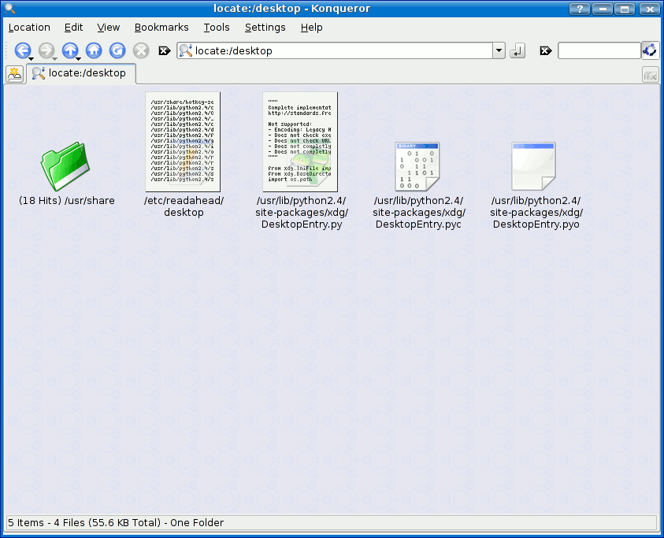Using locate: to find files in Konqueror
The search bar, which is located next to the address can also help you find files and folders. This toolbar functions exactly like a search bar in a Web browser. Simply type the name of the file or folder you are looking for, hit enter and Konqueror will then go out and find the files or folders requested.
While AmaroK (discussed later in the chapter) can help you manage your music collection, Konqueror can help you add (rip) CDs into your collection so you can listen to them on your iPod or mp3 device. Simply place the CD in the CD-ROM drive, and, when prompted, open it up in a new window. There will be different folders labeled with different media formats. For example, if you are using the Ogg Vorbis format (the default format for media files in Kubuntu), open the folder and copy them to the directory where you store your collection. Another application to use to rip music is KaudioCreator, which is discussed later in the chapter.
A lot of people still have Windows partitions on their hard drives and would like to access the information stored there. Kubuntu can browse these files in read-only mode. Each Windows partition needs to be mounted before it can be accessed in Konquerer. This is a very simple process.
By default, Kubuntu mounts all its media in the /media directory, and your windows directory will be mounted in the same location. First, create a directory. Next, mount the partition to that directory. All of this work will be done from the command line, so open up Konsole, Kubuntu’s terminal program (See Figure 7-31, and create the directory by typing sudo mkdir /media/windows. Enter your password. After the directory is created, mount the directory by typing the following sudo mount /devhda1 /media/windows -t ntfs -o nls=utf8,umask=0222. In simpler terms, this command will mount the directory in the correct folder with permissions that will allow you to access it in Konqueror. (Note: Read-only access is limited to NTFS partitions. Kubuntu can read and write to partitions formatted as FAT.)
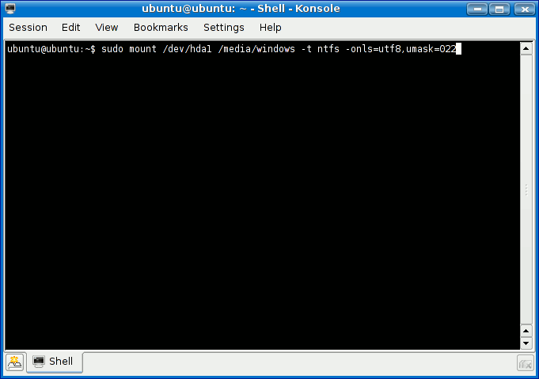Konsole with commands
Now you can browse files that are still stored on your Windows partition.
USB drives are everywhere these days, and Kubuntu handles them quite easily. Simply connect your USB drive, and it will auto mount. These drives will then be available under Konqueror through the media folder. Before removing the drive, make sure that you unmount it by right-clicking on the device and selecting Eject. The device can then be safely removed.
Kubuntu comes with a great program that can help manage all of your music files called amaroK (See Figure 7-32).
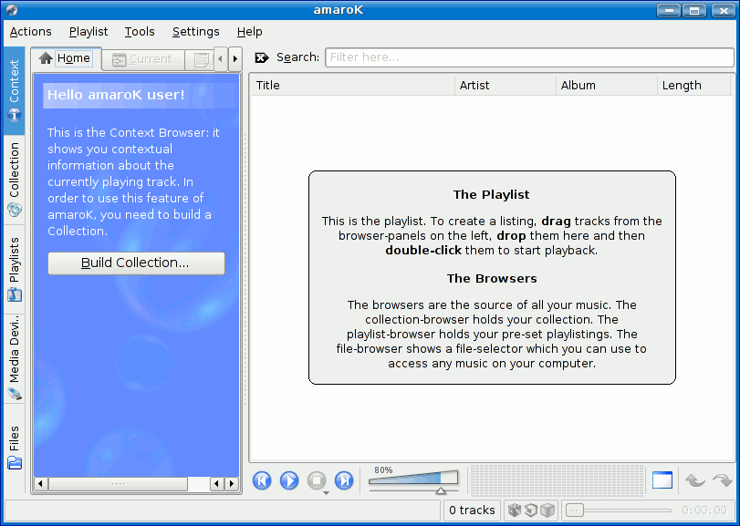amaroK
This application can serve as a full-fledged media library that can create play lists, track how often the user listens to a certain song, and even interact with your iPod. Looking for lyrics to the song that is currently playing? AmaroK can find them. Wondering what the CD cover of your favorite new album looks like? AmaroK can grab this information for the user as well. Along with media stored locally, amaroK can track podcasts and even let you listen to your favorite Internet radio station. Music is stored in a collection library that is arranged by artist, album, and song based on the tags built into the media. Each song can be rated, which can help determine the frequency of it appearing during “shuffle mode.”
Upon launching amaroK for the first time there is a nice wizard that helps configure the user’s collection. This First-Run Wizard will set up how the program will be displayed and the location of the folders that music is stored in. (Yes, a collection can be built across many different folders and sub folders.)
After setting these two options, amaroK will ask the user how the music will be stored. Since the application uses a database, this information can be stored in SQLIte, MySQL, or PostgreSQL depending on what is installed and your preferences. If at any time the user needs to make changes to how things are configured, the First-Run wizard can be rerun at anytime from the Tools menu. Figures 7-33 through 7-36 present several screenshots of the First-Run Wizard.
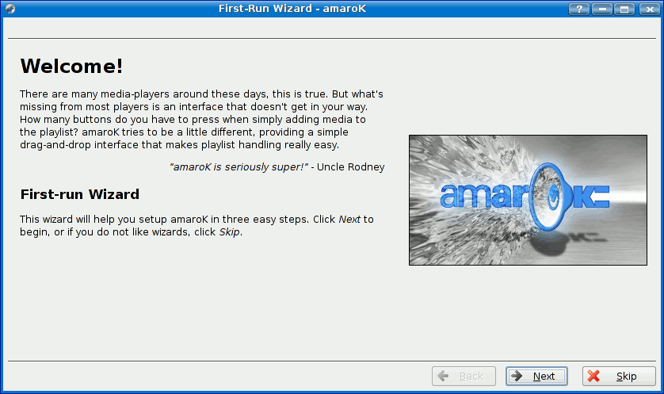Welcome to the First-Run Wizard
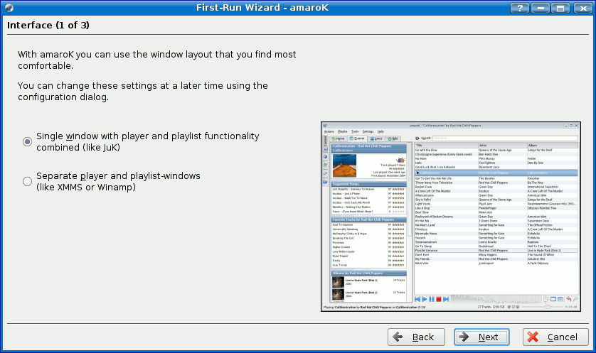Choosing the default look of amaroK
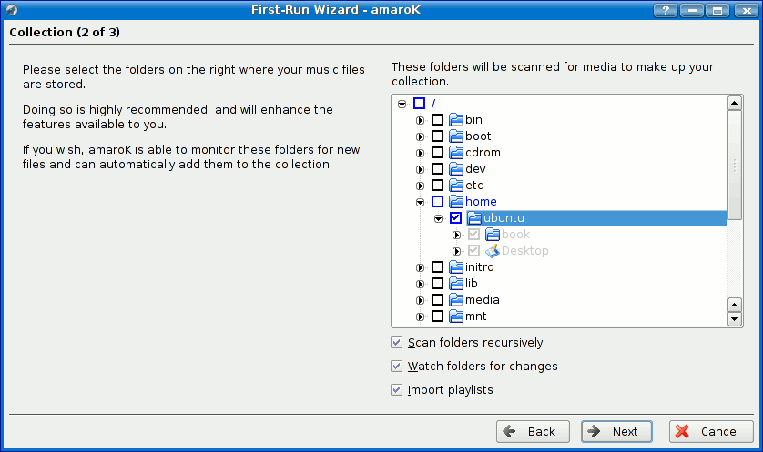Selecting the location your catalog
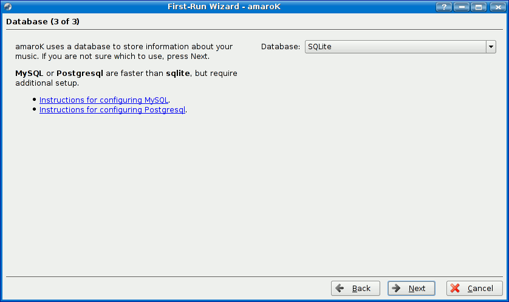Choosing the type of database to store your collection in
In order to listen to .mp3 files, an additional package will need to be installed from multiverse (see the section on Managing Repositories) through Adept. The package, libxine-extraodecs will also enable you to play some VI and some QuickTime videos, (S)VCDs, and most video files out there.
Now that your collection is configured, it time to create your play lists Simply select the songs you would like to listen to, and drag them over to the play list pane. If you would like to listen to all of your music, select dynamic mode, and it will create a play list based on past listening habits. The more you listen to a certain song the greater chance that song will repeat or a similar song will appear in the dynamic play list.
Kubuntu comes with a large number of applications preinstalled and configured, including Web browsers, office applications, and e-mail. Remember, since choice is a huge factor in Kubuntu, if you do not like the default applications you can always change them. All of these applications are available through the K menu.
The default office application for Kubuntu is OpenOffice.org 2.0. This version is the second major release of the suite that includes Writer, Calc, Draw, Impress, and Math. Each of these programs is easy-to-use and can help you switch from the Microsoft Office product line. In fact, the OpenOffice.org suite that can be installed on a Windows system comes on the installation CD to help you get comfortable and ready for a switch to Kubuntu. Each application corresponds to a similar application in the MS Product line. Calc is very similar to Excel, Writer is the same for Word, Impress is PowerPoint, and Base functions similarly to Access. OpenOffice.org can handle all but Microsoft Access files without problems, and the whole suite is ready to be used in a corporate environment as well as for personal use.
To demonstrate the power of OpenOffice.org, we will work on creating a new document. To open up OpenOffice.org Writer, open up the K menu, navigate to Office, and then OpenOffice.org Writer. You can also launch Katapult, type in Writer, and hit Enter.
Writer resembles any other word processing software you have used before. Simply start typing your letter or paper as you normally would, and use the toolbar for formatting options that you require, including changing alignment, bold-facing, italicizing, and other needs.
When you are done working on a document, save the document through File > Save or by typing Ctrl+S. OpenOffice.org saves documents in the Open Document format. This file format is a standard across the world. You can also save documents in other formats, including Microsoft Office and Adobe PDF format. To save as a PDF file, just click the PDF button on the main toolbar (located next to the print icon), and enter a filename.
As mentioned before, Kubuntu CDs come with Open Source software that can be installed on Windows PCs so you can learn the OpenOffice.org suite before installing Kubuntu if you choose to do so.
As mentioned earlier, Konqueror can function as a file manager as well as a Web browser. To launch Konqueror, open up the K menu, navigate to Internet, then Konqueror. Alternately, you can launch Katapult (Alt+Space) and type in Konqueror. Like other modern Web browsers, Konqueror provides tabbed browsing, the capability to have multiple Web pages open in the same window. To do this, go File > New Tab or press Ctrl+T. A new tab will be created in your open Konqueror window. A cool feature is that you can be browsing the Web in one tab, browsing your home directory in another tab, and also browsing network folders in a third tab. All of these functions can help manage your taskbar and help keep your desktop looking clean and sharp.
As a Web browser, Konqueror enables you to set bookmarks, change your Home Page, and utilize all the other features you would expect from a Web browser.
Navigating around the Internet is no different in Konqueror than in any other Web browser, including Firefox, Opera, Netscape, or Internet Explorer. Just type the Web address into the address bar, and hit Enter. For example, type in www.kubuntu.com to visit the home page for Kubuntu.
To search using Google, simply move to the search bar, and directly to the right of the address bar type in what you are looking for. Konqueror will use Google to find it for you.
Using the Google search bar to search the Web
Tip
If you are using Konqueror in the file manager mode, the Google search bar defaults to locate, which will search your hard drive.
Often when browsing the Web, you will see an orange icon at the bottom of Konqueror. This means there is an RSS (Really Simple Syndication) feed available. To track this feed, simply click on it, and Konqueror will add it to your subscribed feeds in Akregator. More information on Akregator will be provided later in this chapter.
Allowing choice is a key feature of Ubuntu, and Kubuntu ships with the latest available version of Firefox (as of this writing 1.5.1). Firefox has taken the Web browser world by storm and is as good or even better then Internet Explorer. Firefox not only provides better features and a better browsing experience, it adheres better to Web standards. Like Konqueror, Firefox includes tab browsing (File > New Tab or Ctrl+T), bookmarks, and everything you would expect of a modern Web browser.
Firefox has a lot of different extensions that can be plugged in and allows greater flexibility for your Web browser. The most common plug-ins are for using Macromedia Flash and Java, things some Web pages require.
Installing a plug-in is as simple as visiting a Web site that requires it. A yellow bar will appear indicating you are missing a plug-in. Click on the Install Missing Plug-ins button to install the required plug-in.
Another common task is creating or burning CDs both for listening to music or for creating a backup of your system. Kubuntu’s default CD creation program is K3b. K3b provides a very familiar (See Figure 7-38) interface for burning and copying CDs.
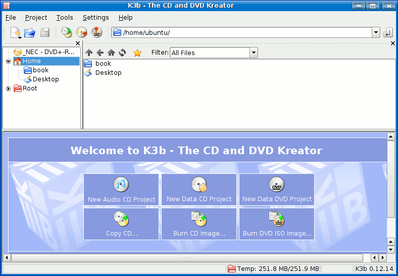K3b
Simply click on one of icons from the main Kreator screen that describes the project you would like to create: a new audio CD, a new Data CD, a new data DVD project, or even copy a CD. After the new project has been started, simply drag the files from the top section to the lower section (See Figure 7-39).
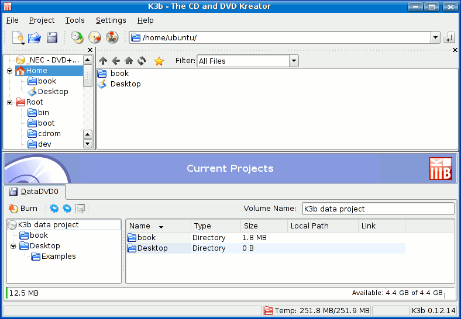Just drag and drop the files
Once the files have been selected, select Burn, and sit back while your new CD is created. K3b is a very easy-to-use utility that can help with the creation of backup CDs or even new music CDs.
KaudioCreator can be launched through the Multimedia section in the K menu or through Katapault by typing KaudioCreator. To rip music, you first need to configure the correct encoder. Simply use the wizard under Settings > Configure KaudioCreator to select the correct encoder, OggEnc or FLAC. To create mp3s out of files you will need to use Adept to install Lame from the universe repository. Upon selecting the encoder, the files will be placed automatically in /home/username/encoder. See Figure 7-340 for an example of Configure KaudioCreator.
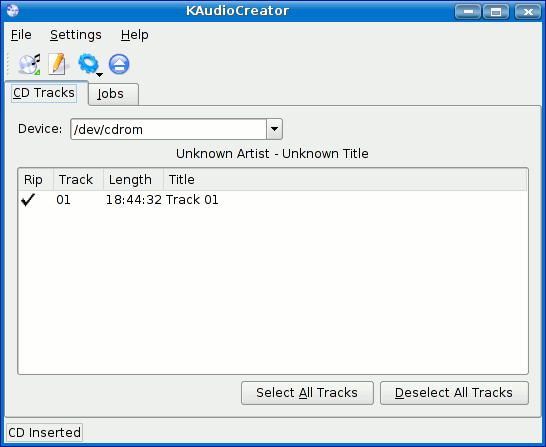KAudioCreator in action
KaudioCreator will automatically try to connect to CDDB to download the artist and track information. This will help you to better manage your music collection.
Once the track information has been downloaded from CDDB (Compact Disk Database0, simply click on the tracks you would like to rip, or click on Select All Tracks. Once the tracks have been selected, click on Rip Selection directly under the Settings menu, or go to File > Rip Selection.
KaudioCreator will help you convert the music from your CDs into a format that you can use with your iPod or other mp3 player.
Instant Messaging is another application that we almost cannot live without these days. Kopete, Kubuntu’s default instant messaging client, handles this task very well. It is found under the Internet section in the K menu. You can also launch Kopete from Katapult by typing Kopete. The beauty of Kopete is that it can connect to all of the major service providers, so you do not have to have multiple programs open. Kopete can handle ICQ, MSN Messenger, Yahoo Messagner, and AIM. The newest version of Kopete, which is included with Kubuntu, can handle MSN Webcams as well. Because Gtalk (Google’s Instant Message program) is built around the Jabber protocol, Kopete can handle that as well. Figure 7-41 shows a sample of Kopete in action.

Kopete
The first time Kopete is launched the Configure Kopete wizard opens. First, set up the different accounts that you will use to connect. Kopete can save your passwords to these accounts and even automatically connect upon startup.
Once the accounts are configured correctly, you can change Kopete’s behavior to fit your preferences. There are many options that can be selected, including away settings, what happens when a new message arrives, and even how the system starts up.
As mentioned previously, new in the latest version of Kopete is the capability to access MSN Webcam chats. Configuring how Kopete deals with Webcams is the last option that can be changed here.
These days almost everyone uses e-mail, and almost everyone uses some form of calendar program to keep track of appointments and schedules. Kontact, Kubuntu’s default PIM (Personal Information Manager), will take care of all of these tasks plus more. Open up Kontact, and it will look like Figure 7-41.
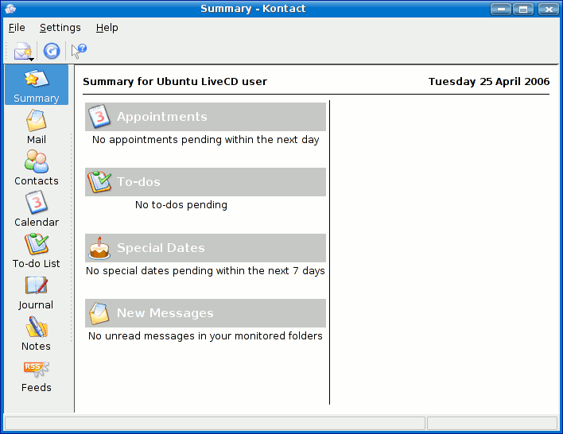Kontact
From looking at the example, you can see that Kontact has a lot of different features, and we cover a lot of the program’s options in the following sections. To start Kontact, go to K menu > Internet section. You can also start it from Katapult by typing Kontact.
Kmail is the program that handles e-mail. It can be run separately from Kontact if you choose. The first step in configuring Kontact is to set up Kmail to send and receive e-mail.
Setting Up Your E-mail Account
There are several pieces of information that you will need to know in order to set up things. Your Internet Service Provider (ISP) or system administrator should be able to provide these details to you.
Type of e-mail server (such as POP or IMAP)
Mail server name (such as mail.domainname.com)
Mail account’s username and password
Authentication type (typically 'password')
Outgoing mail server name
When Kontact is launched for the first time, a wizard will start that will guide you through setting up this information. The first option will be to set up your identify with the e-mail address in the E-mail Address box and add any optional information that you would like. Click Forward to continue.
When you choose the type of e-mail server you are using, the options will vary. Fill in the server name and the username. The Security and Authentication Type settings may need to be changed, but for most accounts the default settings should be fine. Click Forward to continue.
The next screen does not have to be filled out, but decide what you want to do based on your preferences. However, the next screen will help you set up sending e-mail. Select the server type, typically SMTP, and add the server name to the server box. Click Forward to continue. Finally click on Finish to close the wizard and begin using Kmail.
Using Korganize
Korganize is included with Kontact. It will track your schedule and provide reminders of your appointments. Upon switching Kontact to calendar mode, you will see a month view on the right and actual dates on the right, as Figure 7-343 shows.
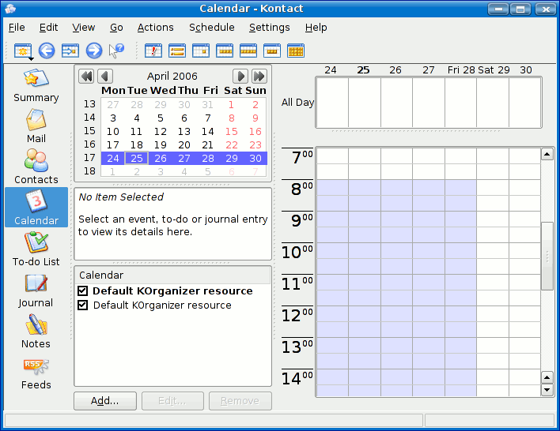Korganize, Kontact’s in calendar mode
There are two different types of events that can be set up in Kontact:
Meetings: Events scheduled with different people
Appointments: General events
It is easy to add a new appointment. Find the date for the event in the month view, right-click, and select New Event. In the new window that opens up, fill out the Summary, Location, Time and Description boxes. You can also set up Kontact to remind you when it is time for the appointment.
Another great application that is a part of Kontact (or which can be used separately) is Akregator, an RSS (Really Simple Syndication) program that can track your favorite Web feeds. Due to the integration of Akregator and Konqueror, any Web page that has an RSS feed will have an orange icon in the corner of the program.
Using the RSS icon to add a feed to Akregator Simply click on the icon and select Add to Akregator. Akregator will keep your feeds up-to-date by automatically checking for new content. Another bonus of the integration between Konqueror and Akregator is that Web pages can be opened up within Akgreator to post comments and view more information than what is provided by the Web feed.
Kontact is a great program that can help organize your life, track your favorite Web sites thru RSS and be your e-mail application.
Kubuntu comes with a great program to help edit and create photos or drawings. Krita, which can be found under the Graphics section of the K menu or launched from Katapult by typing Krita, is a fully functional graphics program. Everything including photo retouching, image editing and creating original art can be done with Krita. Krita can handle almost any type of image file format including Photoshop files created with version 6
Upon starting Krita, you will be prompted to either start a new image or open up an existing one. Under Create Document, there is a group of templates that can be used to create this image, ordered by color model. As we will be creating a new image, just use the Empty Document, and you will be prompted with the New Image dialog box (Figure 7-45).
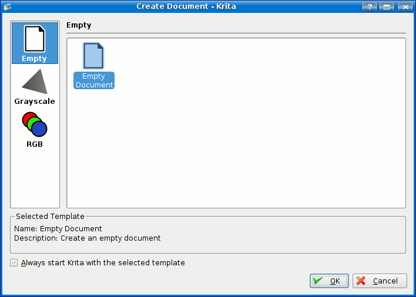Custom document in Krita
At this point you can name your document, specify the width, Height, and resolution, and set the color mode and depth of your image.
The main screen for Krita is displayed, which can be somewhat confusing. There are toolbars on the left, right and top of the window, and the actual painting area is in the middle (Figure 7-46).
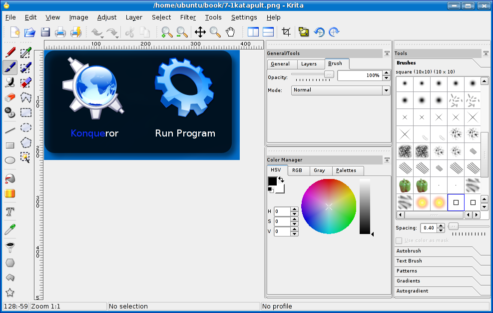The main window for Krita
Another example of using Krita is cropping an existing document to a new size. This is easily done using the different tools. Open up an existing image, and use the Select a rectangular area tool located on the left in the Krita toolbar.
After selecting the area you would like, Krita makes the outside area grey. Figure 7-47 shows what this looks like.
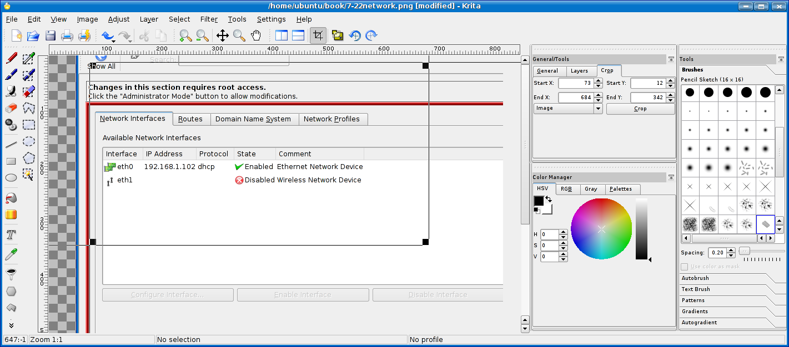Selecting an area in Krita
Once the portion of the image you would like has been selected, hit Ctrl-Xto cut the image. A cool feature of Krita is that you can then paste what you cut into a new image by selecting Paste into New Image from the Edit menu (Figure 7-48).
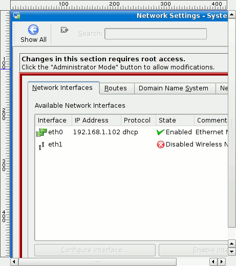Paste into a new image in Krita
Krita is a great image manipulation tool that can help you with all of your image needs. For more information on how to use Krita, refer to the Krita handbook included with Kubuntu as discussed later in the chapter.
The default media player for movies and also for listening to CDs is a great program called kaffiene. Kaffiene can be found under the K menu under Multimedia or launched from Katapult by typing Kaffiene. This program functions a lot like Windows Media Player for those coming from a Windows background.
A great place to find support for Kubuntu is Internet Relay Chat (IRC) is through Konversation and the different IRC channels. Join irc.freenode.org, and then come over to #Kubuntu to get any of your support questions answered. The people there are full of great knowledge and can probably solve any issue or problem that you have.
Konverstation can be found in the Internet section under the K menu. Upon start up for the first time, a wizard will open and allow you to configure your identity, the account which you use to connect to the different channels. See Figure 7-49 for an example.
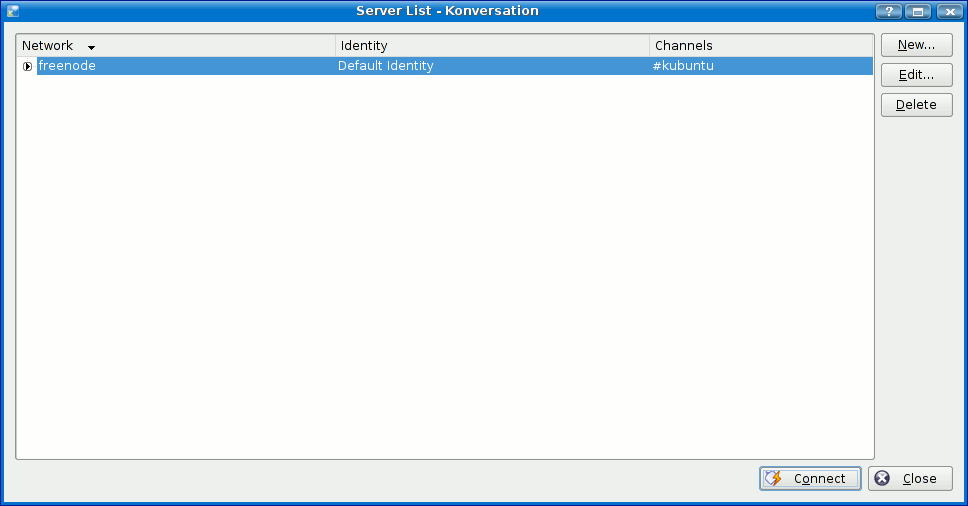Manage identities in Konversation
Remember #Kubuntu is a great place to find help with your Kubuntu installation, so set up Konverstation to automatically connect to that channel upon startup.
Kubuntu allows you to completely configure your desktop and one of the best examples of this is using Kubuntu in Kiosk mode. Kiosk mode allows an administrator to configure KDE and all aspects of the desktop and prevent the end user from changing the settings.
KDE stores all of its configuration information in text files that are similar to Windows INI files. These files control everything from the default background to whether or not a person can add bookmarks. To see the locations of the configuration files, simply type kde-config –path config from the Konsole. Note that the order applied is the reverse order of what is displayed.
By simply changing one of the files in the highest priority, last listed in kde-config, you can affect what all users see.
To change the background for all users simply edit the Wallpaper section found in kdesktoprc located in /usr/share/kubuntu-default-zettings/kde-profile/default/share/config. See Figure 7-50 for an example of this.
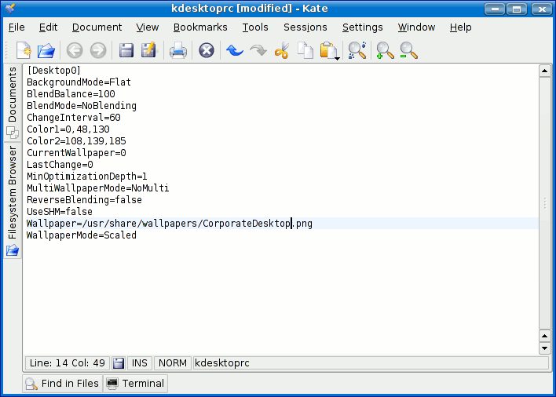Editing the Wallpaper section for Kiosk mode
As previously discussed, each user can change their desktop to meet his or her own needs. However, an administrator can make it so some things cannot be changed. Simply insert [$i] at the top of the file for each application you would like to make immutable. Figure 7-51 shows the background changed and made immutable.
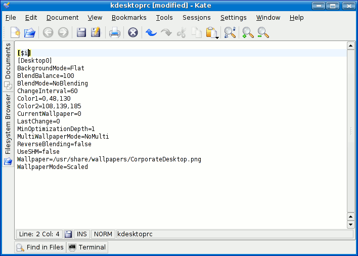A default background made immutable
Along with enabling or setting changes, an administrator can remove user access to certain items by simply editing the kdeglobals file and adding a [KDE Action Restrictions] [$i] section. Figure 7-52 shows the process of removing the capability to start a konsole.
Removing access to starting a konsole session
A great tool that can help with setting up Kiosk mode is iosktool
There are plenty of additional items that can be limited and changed in Kubuntu.
Unlike many other OS, Kubuntu includes a large amount of applications right inside the system. These tools have been selected to allow you to install Kubuntu and then just get your work done. Some of the applications installed by default have been covered already. Unfortunately (or fortunately, depending on how you look at it), there are just too many applications to go over due to space restrictions.
To partially solve that problem, here is a quick summary of many programs that are available from the K menu, including how to find them along with a brief description.
Kate K menu > Utilities > Kate
This simple and powerful text editor is great for editing documents, making quick notes, and programming. There is a vast range of plug-ins for items such as spellchecking, statistics, and syntax highlighting.
K menu > Utilities > Calculator
Speedcrunch is an extremely powerful calculator that can help you solve both basic and advanced math problems.
KonsoleK menu > Utilities > Konsole
Beneath the desktop is a very powerful command line core. Konsole allows you access to this powerful command line by putting a nice window frame around it. Konsole is great for the command line junkies, those who prefer to do things with a graphical interface. Konsole can be completely customized to meet your command line needs.
K menu > System > Info Center
The KinfoCenter provides information about your system, including partitions, network interfaces, and other important features about your system.
K menu > System > Performance Monitor
The Performance Monitor provides information about how your Kubuntu system is functioning. Having problems with an application taking too much memory? How would you know? KsysGuard provides this information.
System Logs Viewer (KsystemLog)K menu > System > System Logs Viewer
Interested in what is going on with your system? Kubuntu keeps track of files and access logs that can be viewed through this program.
K menu > Multimedia > CD Player
KsCD is a great little program that will allow you to listen to CDs. KsCD will grab the track information from FreeDB and then display this information as the track is played.
K menu > Internet > Internet Dial-Up Tool
Need help connecting to you ISP (Internet Service Provider) through a modem? KPPP will help take care of this. KPPP can help setup your modem and even setup your dial up connection.
K menu > Internet > Remote Desktop Connection
KRDC can help you connect to remote systems either through the remote desktop protocol (RDP) or through virtual network connection (VNC). Simply type in the address, and click on connect. The remote desktop connection can save the settings for each computer that you connect to.
K menu > Internet > Bluetooth Chat
K menu > Internet > Bluetooth OBEX Client
The applications are installed by default and are new to this release of Kubuntu. They both help you connect to various Bluetooth-enabled devices.
K menu > Graphics > PDF Viewer
KPDF provides you with the ability to open and view files saved in the Adobe PDF format
K menu > Graphics > Screen Capture Program
KsnapShot is a great application that allows you to take screenshots and save them in different formats. The great thing about KsnapShot is that you specify the exact amount of the screen that will be captured. This program was used to take the screenshots for this chapter.
K menu > Graphics > Image Viewer
Gwenview is the default application for viewing images in Kubuntu. All different types of images can be opened including .png, .jpeg, and .bmp.
While not installed by default, Kdevelop is a wonderful Integrated Development Environment (IDE) that can help out with your coding projects. Simply install it using Adept, and you will find it located under the Development menu in the K menu.
The more you use Kubuntu, the more you will learn some tips and tricks to help make your computing experience better and easier. Kubuntu can be configured to do almost anything you would like.
Sometimes there are programs you would like to start automatically every time you login to your system. An example of this is Katapult, which was discussed earlier in the chapter. It starts automatically and runs in the background. There are four easy steps to set this up using the session management feature of KDE. KDE can save everything and then restore those settings for you.
1. Open up System Settings from the K menu and click on the User Account Section.
2. Click the Session Manager button on the left, and make sure that the Restore manually saved session checkbox is enabled.
3. Log out saving your sessions.
It is possible to set up Kubuntu so a user is logged in automatically when the computer boots. This change is not recommended for must computers as it is insecure and may allow others to access your information.
1. Open up the System Settings from the K menu.
2. Click on Administrator Mode, and entering your password to gain administrator privileges.
3. Select the Convenience tab, and check Enable Autologin.
4. Select the user to autologin from the drop down menu, and select an appropriate time delay.
If you are sick of always having to turn on your numlock, the change is very simple to make.
1. Open up System Settings from the K menu, and select Keyboard.
2. Under the NumLock on KDE Startup, enable the Turn On checkbox.
3. Click on Apply to save your settings.
KDE is the best documented desktop environment around, and Kubuntu strives to match that level. Kubuntu currently ships with three documents: the Release Notes, About Kubuntu, and the Desktop Guide, all of which feature specific Kubuntu material and are maintained by the Ubuntu Documentation Team.
Help is found through the Khelpcenter and is organized around applications and then tasks. Khelpcenter is launched either through the K menu under Help, or is available from the main screen or from the start page of Konquerer..
The Khelpcenter
Along with the Kubuntu documents, Kubuntu ships with the help documents for all of the major applications that can also be accessed through the KhelpCenter. These manuals can help solve some of your common problems and answer many of your questions.
The default home page for Konqueror lists the help documents that are shipped in Kubuntu. The list includes the following:
About Kubuntu: This includes information regarding Kubuntu and the Kubuntu project.
Release Notes:
Interested in what is installed by default in Kubuntu? This guide gives a quick overview of what is new and what is supported.
Desktop Guide:
This document is brand new in Kubuntu 6.06 and will guide you through some of the basic needs for operating your Kubuntu system. A lot of information in this chapter can be found in that guide.
Packaging Guide:
Would you like to learn how to package applications to give a hand to the Kubuntu project? This guide will show you what you need to create a package that will be accepted by the maintainers.
Server Guide:
If you are interested in running Kubuntu as a server, this guide will help you get set up. Items that are included are running Kubuntu as a file server and/or a Web server. This is a great resource for more advanced users.
If you still need help after looking in the documentation, Kubuntu provides other means for finding this information. A great place to start is on the IRC channel #Kubuntu, which, as we noted earlier, can be accessed through Konverstation. There are always wonderful and knowledgeable people in this channel who can answer almost any question. If you prefer to use the Web for answers, the Kubuntu wiki, found at www.wiki.kubuntu.org, has a large amount of information loosely organized with a great search function built in. A third place to find information is the Kubuntu forums at www.kubuntuforums.org. Remember Google is your friend as well. Chances are someone else has come across your problem before and has written a solution to the issue.
Kubuntu is built around a great community of people who give back what they learn. There are many ways to get involved and share your love of Kubuntu. A great place to find out how you can make a difference is at www.ubuntu.com/community/participate. Not everyone involved has to know how to create packages, understand how their kernel works, or be a great programmer. Kubuntu also has a place for people to write wiki pages or help out with documentation needs.
Kubuntu is a great part of the Ubuntu project and is quickly maturing. From its start as the idea of a single developer to many people working together, Kubuntu is becoming the KDE distribution of choice. However, there is still room for improvement and additions to the setup. A large community of people discuss every day, either through IRC or e-mail, ways to make these improvements. Bugs and other issues are quickly resolved without the additional cost of new programs.
Kubuntu is going to be around for the long haul, and each new release delivers a better, cleaner, and more polished OS. Help spread the word about the project, and get involved by helping out.